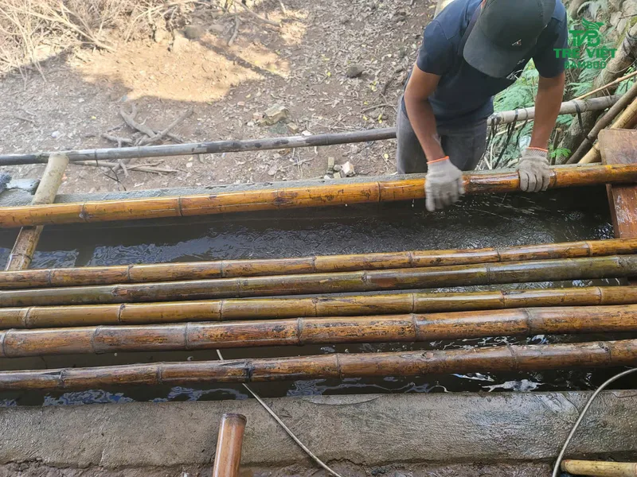
Quy trình xử lý tre luồng quyết định trực tiếp độ bền của mọi công trình tre. Cùng một cây luồng, nếu được xử lý đúng kỹ thuật có thể đứng vững hàng chục năm, còn nếu bỏ qua khâu này thì chỉ sau một hai mùa mưa đã bị mối mọt đục rỗng.
Tại Tre Việt Building, mỗi cây tre luồng đều đi qua 5 bước xử lý tại xưởng trước khi được đưa vào thi công nhà tre, chòi tre, quán cafe hay bán ra cho khách hàng. Bài viết dưới đây ghi lại từng công đoạn bằng hình ảnh thực tế tại xưởng.
Tre Luồng Là Gì? Vì Sao Được Dùng Nhiều Trong Công Trình?
Tre luồng (tên khoa học Dendrocalamus barbatus) là loài tre lớn, không gai, mọc nhiều ở các tỉnh miền núi phía Bắc, nổi tiếng nhất là Thanh Hóa. Nhờ thân to, thẳng và vách ống dày, luồng chịu lực nén, lực uốn rất tốt nên thường được chọn làm cột, kèo, xà gồ và khung chịu lực cho nhà tre.
Chiều cao14 - 20 m
Đường kính thân8 - 12 cm
Chiều dài gióng30 - 50 cm
Đặc điểmVách dày, thân tròn đều, ít thon
- 01
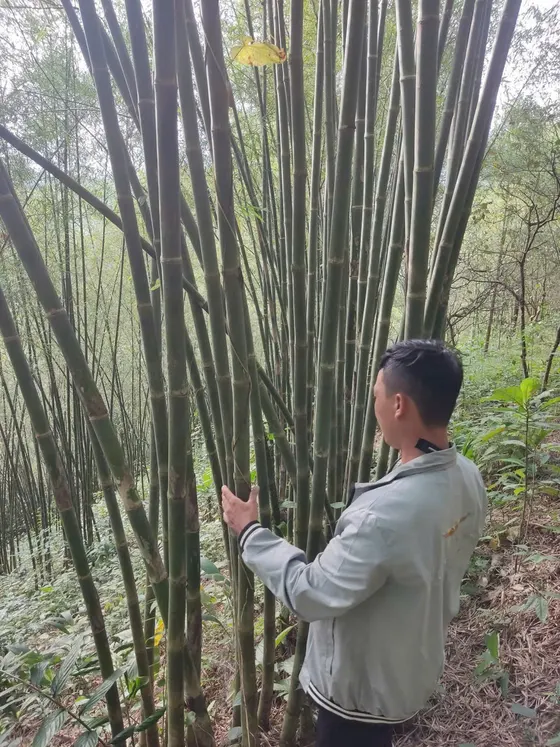
Kiểm tra bụi luồng tại vùng nguyên liệu
- 02
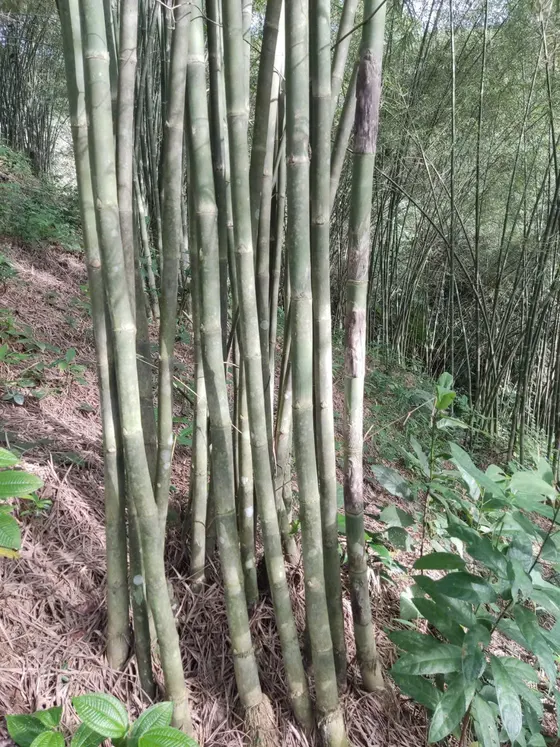
Bụi luồng đủ tuổi, thân thẳng
- 03
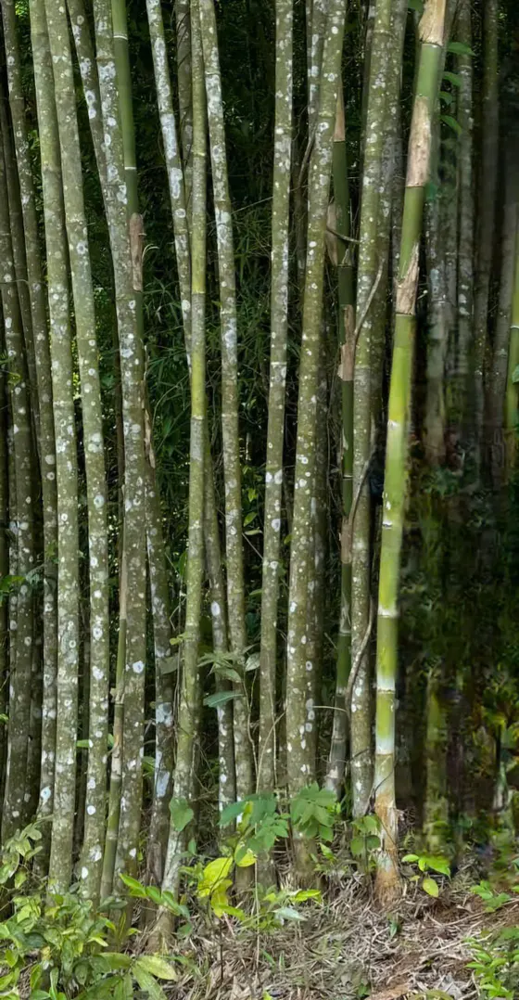
Thân luồng già chuyển xanh xám
Vì Sao Tre Luồng Phải Được Xử Lý Trước Khi Sử Dụng?
Trong thân tre tươi có nhiều tinh bột, đường và nước. Đây chính là "thức ăn" của mọt tre, mối và nấm mốc. Tre không được xử lý, hoặc chỉ quét thuốc bên ngoài, sớm muộn cũng bị mọt đục từ bên trong: bên ngoài trông vẫn nguyên vẹn, đến khi phát hiện thì thân tre đã rỗng.
- 01
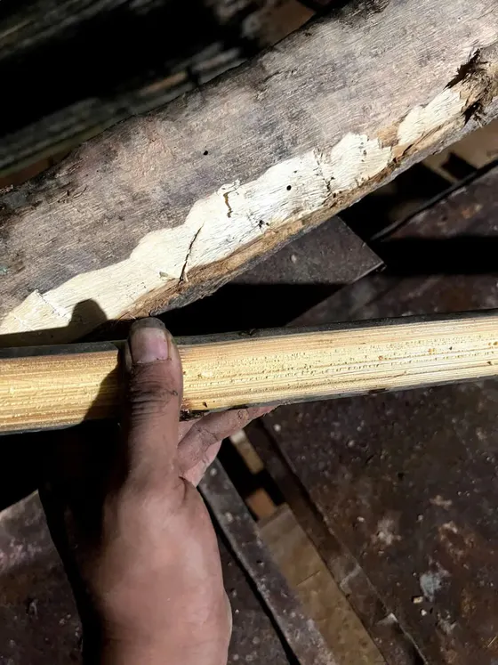
Tre chưa xử lý bị mọt ăn mục
- 02
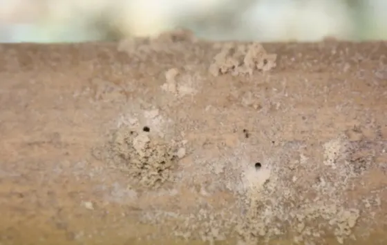
Lỗ mọt và bột mọt trên thân tre
Mọt đục rỗng thân tre
Mọt ăn tinh bột bên trong, cột kèo mất khả năng chịu lực, dễ nứt gãy.
Nứt, mốc vì còn ẩm
Tre chưa khô đã thi công sẽ co ngót, nứt dọc thân, ố mốc và tạo đường cho côn trùng xâm nhập.
Xem thêm các phương pháp truyền thống và hiện đại trong bài cách xử lý chống mối mọt cho tre.
Quy Trình Xử Lý Tre Luồng 5 Bước Tại Tre Việt Building
Tre Việt Building kết hợp phương pháp truyền thống và hiện đại: ngâm thuốc sinh học, luộc trong dung dịch boron và hun khói, sau đó phơi đến khi đủ khô mới xuất xưởng.
-
01Bước 1
Tuyển chọn & khai thác
Chọn những bụi luồng đủ tuổi, thân già, thẳng, vách dày, không sâu bệnh. Cây đạt chuẩn được khai thác, bó lại và vận chuyển về xưởng.
Tre già 3 - 5 tuổi -
02Bước 2
Chà rửa & phân loại
Từng cây luồng được chà sạch đất cát, rêu mốc, rồi phân loại theo đường kính, chiều dài và độ thẳng để xử lý đồng đều.
Phân loại theo kích thước -
03Bước 3
Ngâm thuốc & luộc boron
Tre được ngâm trong bể thuốc sinh học chống mối mọt, sau đó luộc trong dung dịch boron để thủy phân tinh bột và làm chín trứng mọt ẩn bên trong.
Xử lý tận gốc bên trong thân -
04Bước 4
Hun khói & nắn thẳng
Hun khói giúp tre lên màu đẹp và tăng khả năng kháng côn trùng. Cây nào còn cong được hơ lửa và nắn lại cho thẳng, đều.
Lên màu, thẳng cây -
05Bước 5
Phơi khô & lưu kho
Tre được dựng phơi, xoay cây định kỳ cho đến khi độ ẩm xuống dưới 15%, rồi phân loại thành phẩm, xếp kho có mái che chờ xuất xưởng.
Độ ẩm dưới 15%
Mỗi mẻ tre luồng mất nhiều tuần từ lúc về xưởng đến khi đạt chuẩn xuất kho, tùy thời tiết và kích thước cây. Tre chưa đủ khô chưa xuất xưởng.
Hình Ảnh Thực Tế Từng Công Đoạn Tại Xưởng
Tuyển chọn, khai thác và vận chuyển về xưởng
Chỉ những cây luồng già, đủ tuổi mới được khai thác, vì tre non còn nhiều nước và tinh bột, xử lý xong vẫn dễ co ngót, mọt. Tre được bó gọn, kê cao khỏi mặt đất tại bãi tập kết rồi chở về xưởng.
- 01
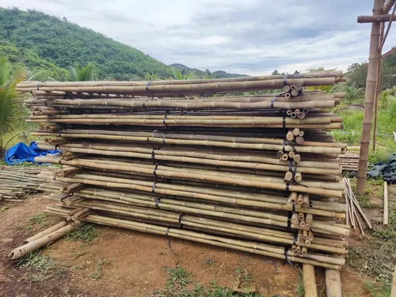
Tre bó gọn, kê cao tại bãi tập kết
- 02
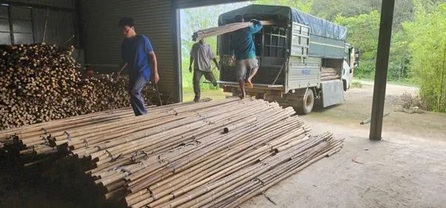
Vận chuyển tre luồng về xưởng
Chà rửa và phân loại
Tre về xưởng được chà sạch đất, rêu và lớp phấn bên ngoài, rồi phân loại theo đường kính, chiều dài. Phân loại kỹ giúp các cây cùng mẻ thấm thuốc đều nhau.
- 01
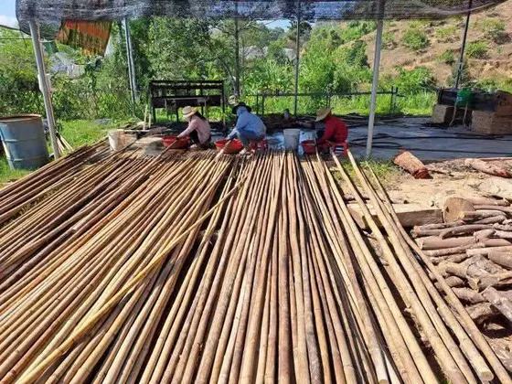
Chà rửa từng cây tre
- 02
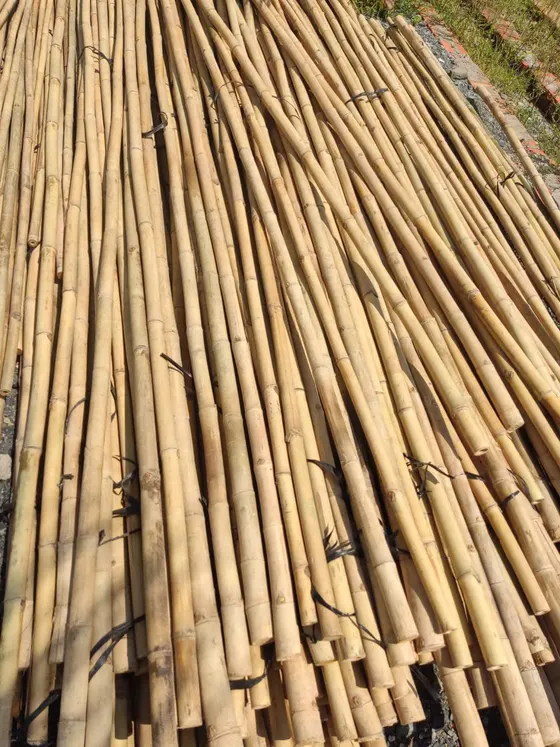
Phân loại theo kích thước
Ngâm thuốc sinh học và luộc trong dung dịch boron
Tre được xếp ngập trong bể thuốc sinh học để thuốc thấm vào thớ tre, phòng mối mọt từ sâu bên trong thân. Tiếp đó, tre được luộc trong dung dịch boron: nhiệt độ cao giúp thủy phân tinh bột và làm chín trứng mọt còn ẩn bên trong, nồng độ muối borax được tăng lên để thấm sâu, ngăn mối mọt xâm nhập về sau.
- 01
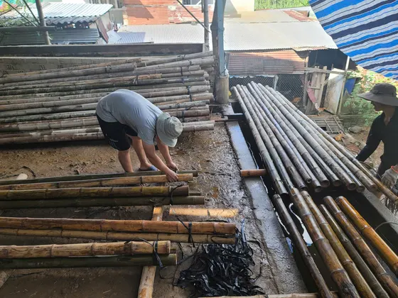
Xếp tre vào bể ngâm thuốc
- 02
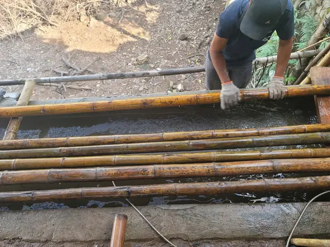
Đảo tre cho thuốc thấm đều
- 03
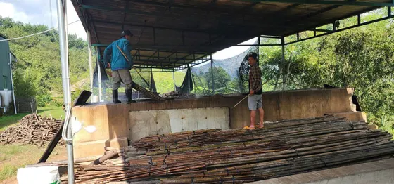
Bể luộc tre trong dung dịch boron
Hun khói và nắn thẳng
Hun khói giúp tre luồng lên màu vàng nâu tự nhiên và tăng khả năng kháng côn trùng. Với những cây còn cong, thợ hơ nóng từng đoạn trên lửa rồi nắn lại, để khi thi công cột kèo được thẳng, mối nối khít.
- 01
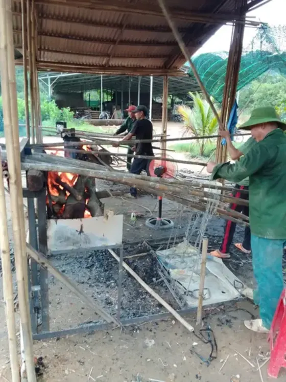
Hơ lửa, nắn thẳng từng cây
Phơi khô, phân loại thành phẩm và lưu kho
Tre được dựng phơi ngoài trời, xoay cây định kỳ cho đến khi độ ẩm xuống dưới 15%. Tre đạt chuẩn được bó theo kích thước, xếp trong kho có mái che, kê cao khỏi nền và phủ bạt khi cần, chờ xuất đến công trình.
- 01
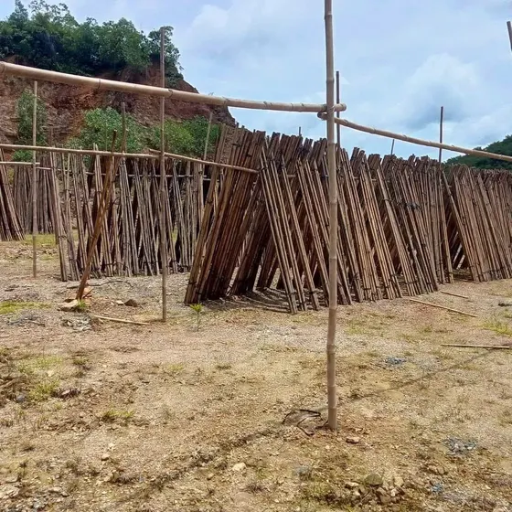
Dựng phơi tre ngoài trời
- 02
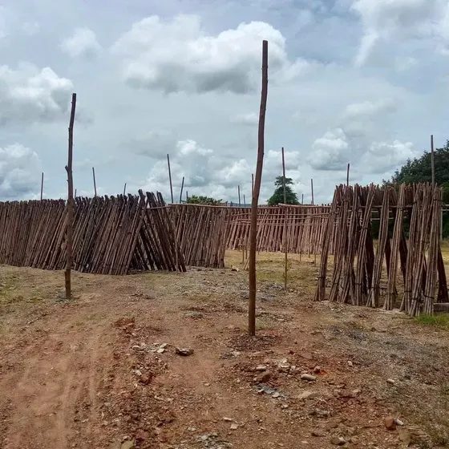
Bãi phơi dựng thành hàng
- 03
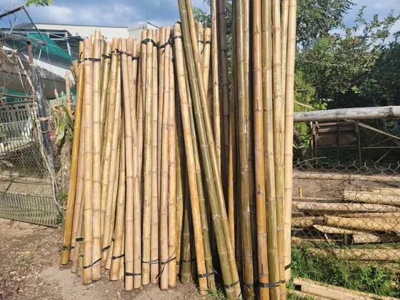
Bó tre dựng hong khô
- 04
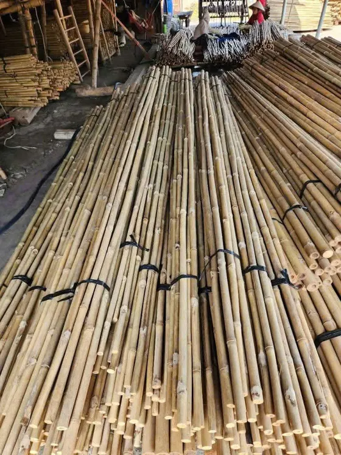
Bó thành phẩm theo kích thước
- 05
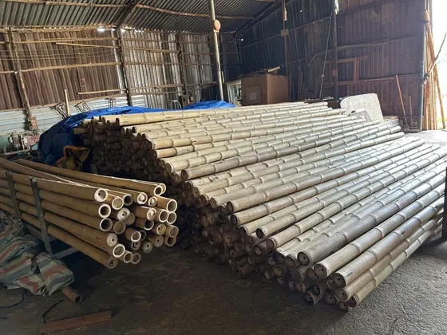
Tre thành phẩm xếp kho
- 06
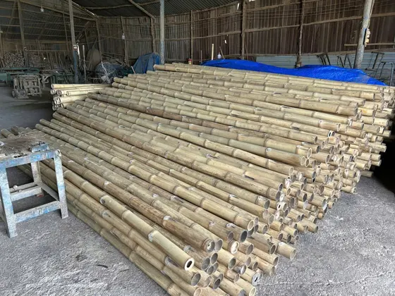
Kho tre đã xử lý tại xưởng
- 07
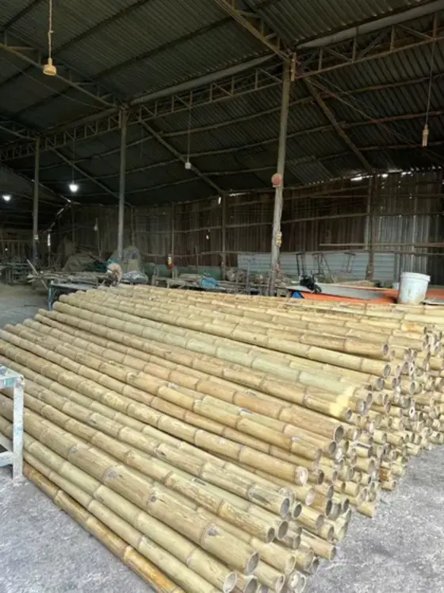
Tre thẳng, đều chờ xuất xưởng
Tre Luồng Sau Xử Lý Được Dùng Làm Gì?
Khung nhà tre, chòi tre
Cột, kèo, xà gồ chịu lực cho nhà tre, bungalow, chòi nghỉ, gazebo sân vườn.
Kèo mái lá, mái tranh
Hệ khung đỡ mái lá, mái tranh cho quán cafe, nhà hàng, resort.
Ốp trần, vách tre
Trần, vách trang trí cho homestay, khách sạn, nhà hàng.
Hàng rào, cổng, pergola
Cổng tre, hàng rào, giàn leo, lối đi trong sân vườn.
- 01
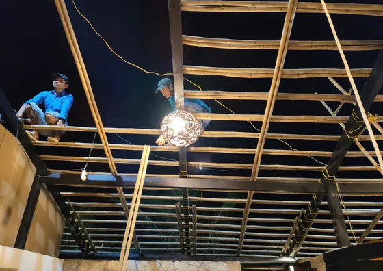
Khung trần tre luồng tại công trình
Tham khảo dịch vụ thi công nhà tre, chòi tre trọn gói hoặc báo giá thi công nhà tre trúc để dự trù chi phí.
Câu Hỏi Thường Gặp Về Xử Lý Tre Luồng
1Tre luồng đã qua xử lý dùng được bao lâu?
Tre luồng được xử lý đúng quy trình, phơi đủ khô và thi công có che chắn mưa nắng có thể sử dụng hàng chục năm. Tre chưa qua xử lý thường chỉ dùng được 1 - 2 năm là bắt đầu bị mối mọt.
2Chỉ quét thuốc chống mối mọt bên ngoài có đủ không?
Không đủ. Mọt ăn tinh bột và đường bên trong thân tre, nên lớp thuốc quét bên ngoài rất dễ mất tác dụng khi tre bị cắt, khoan hoặc nứt. Tre cần được ngâm, luộc để thuốc thấm sâu vào thớ tre.
3Làm sao biết tre luồng đã được xử lý kỹ?
Tre xử lý kỹ có màu đều, thân khô, gõ nghe chắc tiếng, không có lỗ mọt hay bột mọt ở các mắt tre. Bạn có thể đến xưởng của Tre Việt Building để xem trực tiếp từng công đoạn.
4Tre Việt Building có bán lẻ tre luồng đã xử lý không?
Có. Bên cạnh thi công trọn gói, Tre Việt Building cung cấp cây tre luồng đã qua xử lý với nhiều kích thước, nhận cắt theo chiều dài yêu cầu và giao hàng tận công trình.
Nhận Tư Vấn & Báo Giá Tre Luồng Đã Xử Lý
Bạn cần mua tre luồng đã qua xử lý hoặc thi công công trình tre? Hãy liên hệ Tre Việt Building để được tư vấn và báo giá miễn phí.
Nhận tư vấn & báo giá miễn phí
CÔNG TY TNHH TRE VIỆT BUILDING
Trụ sở917 Phạm Văn Đồng, Phường Linh Xuân, TP. Hồ Chí Minh
Nhà máy sản xuấtTổ 6, Ấp Phú Hợp, Xã Phú Lâm, Tỉnh Đồng Nai
Hotline/Zalo087.6915.999
Emailtreviet23@gmail.com
Websitetretruc.com.vn